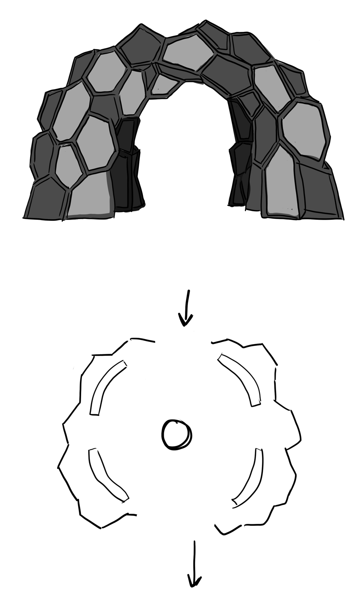

Concepto y
Esquema Básico
Esquema básico

Concepto
Hola Universidad.HTML es una instalación itinerante, plegable y fácil de transportar, diseñada para ocupar un espacio máximo de 12 m². Su propósito es acercar el Diseño Digital a los estudiantes de grado 11 de Santa Marta a través de una experiencia interactiva que les permita descubrir algunas de las posibilidades que ofrece esta carrera. La propuesta toma como inspiración el diagrama de Voronoi, un sistema que divide una superficie en formas irregulares que se relacionan entre sí, para convertirlo en una estructura que puede abrirse, transformarse y convertirse en un espacio habitable.
Más que representar el Diseño Digital de manera literal, la instalación busca transmitir su esencia a través de la forma, el movimiento y la interacción. Para ello, se plantea una estructura compuesta por diferentes celdas geométricas, donde ninguna es exactamente igual a otra, pero todas hacen parte de un mismo conjunto. Cuando está cerrada, la estructura se recoge en pocas secciones planas y compactas que facilitan su almacenamiento y transporte. Sin embargo, al momento de instalarse, sus piezas se despliegan hasta formar una especie de arco abierto que invita a los visitantes a entrar y descubrir lo que hay en su interior. Así, el paso de una estructura compacta a un espacio abierto se convierte en una de las características principales del proyecto: algo que inicialmente parece pequeño y sencillo puede transformarse en una experiencia completamente diferente.
En su interior, el espacio se organiza alrededor de una mesa central de exhibición, acompañada por cuatro estaciones curvas distribuidas a su alrededor. Esta disposición permite que los visitantes recorran cada estación de manera natural, sin que una tenga mayor importancia que las demás. Además, la entrada y la salida se ubican frente a frente, creando un recorrido continuo que guía al visitante desde el primer acercamiento hasta el final de la experiencia.
A esta estructura se incorporan diferentes actividades interactivas, elaboradas con materiales sencillos, económicos y fáciles de manipular. Entre ellas se encuentran fichas y tarjetas con fragmentos de código que permiten construir un pequeño programa de «Hola Mundo» y comprobar su funcionamiento en un computador; piezas gráficas para crear la interfaz de una calculadora; plantillas de celdas que pueden colorearse para explorar la composición visual; láminas de acetato que, al superponerse, dan movimiento a una ilustración, y modelos de papel que se pliegan hasta convertirse en figuras tridimensionales. Cada actividad propone una forma distinta de explorar y experimentar, permitiendo que los estudiantes se acerquen a disciplinas como la programación, el diseño de interfaces, la composición gráfica, la ilustración, la animación y el modelado 3D.